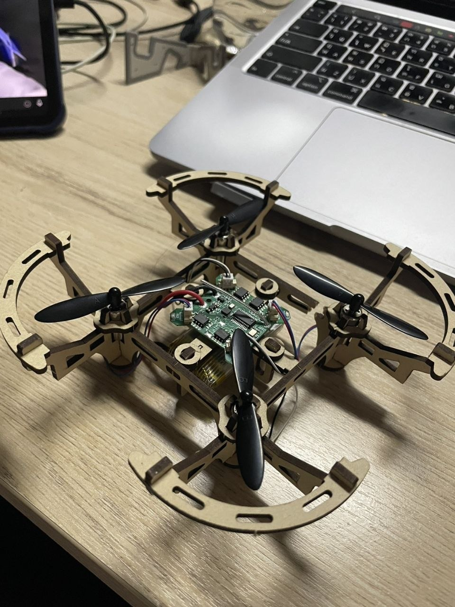
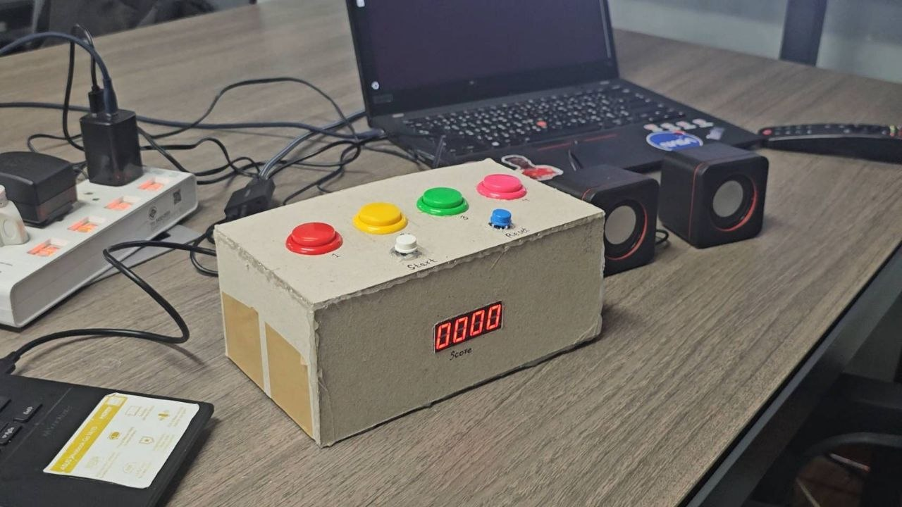

I'm a Computer Engineering undergraduate at KMITL specializing in embedded systems, machine learning, and hardware-software integration.
Engineered an independent computer vision payload utilizing an ESP32 and camera module, integrated onto a commercial drone platform for structural crack detection.
View Project Details →Designed and built a hardware-based arcade rhythm game. Programmed VGA graphics, managed audio synchronization, and integrated physical arcade buttons.
View Project Details →Secured first place in Thailand by demonstrating advanced proficiency in computer networking concepts and practical implementation against top national competitors.
Delivered a presentation to prospective students detailing strategies for succeeding in rigorous academic environments and transitioning into top-tier university programs.
Selected to participate in the prestigious quantum computing hackathon hosted by the Massachusetts Institute of Technology.
Whether you have a question, a lab opportunity, or just want to say hi, I'll try my best to get back to you!
Say Hello
Instead of building a flight controller from scratch, I engineered a custom "vision payload" utilizing an ESP32 microcontroller and an OV2640 camera module. This payload acts as an independent subsystem mounted to the carrier drone.
The ESP32 broadcasts a web server containing the live camera feed. On the ground station, a Python script utilizes OpenCV to process incoming video frames, applying image thresholding to highlight structural anomalies.

This project relies on a distributed hardware model to handle high-speed visual rendering and complex audio playback simultaneously.